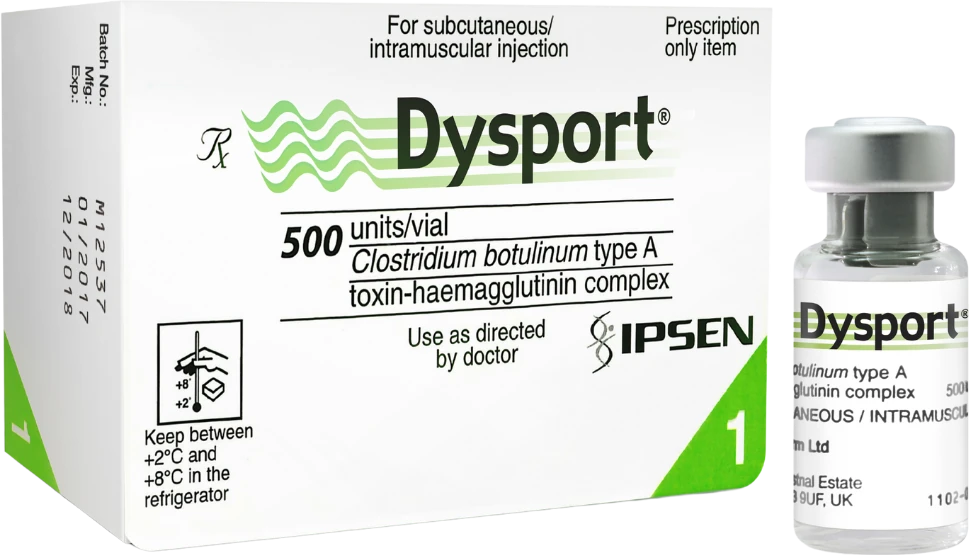

Dysport in Penang | CANVAS Medical Clinic
Fast-acting, soft and natural anti-wrinkle results — physician-administered Dysport at our Gurney Walk clinic in George Town, Penang. A botulinum toxin known for its quicker onset and gentle spread, often favoured for the forehead and larger areas.


What is Dysport?
Dysport (abobotulinumtoxinA) is a botulinum toxin type A made by Ipsen and used worldwide for decades. Like all toxins it temporarily relaxes the muscles that create dynamic wrinkles — but Dysport is distinguished by a slightly faster onset and a softer, more diffuse spread, which can make it particularly well suited to broader areas such as the forehead.
At CANVAS Medical Clinic in George Town, Penang, every Dysport treatment is planned and administered by an LCP-certified physician. Because Dysport uses its own unit dosing, distinct from other toxins, precise physician calculation matters — and we dose individually to your anatomy so you leave looking refreshed, not treated.
How it works
- Consultation & assessment. Your physician examines your facial muscles at rest and in motion, discusses your goals, and advises whether Dysport suits your anatomy and area.
- Marking & dosing. Injection points are mapped to your anatomy and dosing is calculated in Dysport's own units. We avoid over-treatment as a principle.
- Injection. Very fine needles deliver small amounts of Dysport to the targeted muscles. Most patients describe minimal discomfort; the procedure takes 15–20 minutes.
- Review at 2 weeks. Onset is often noticed within a few days, with the full result visible at two weeks. We offer a review to assess the outcome and make any minor adjustments if needed.
Benefits
Faster onset
Many patients notice results within two to three days of treatment.
Soft, natural spread
A gentle diffusion that can give smooth, even results across broader areas.
Ideal for the forehead
Its spread characteristics are often favoured for larger zones like the forehead.
Dynamic wrinkle reduction
Softens forehead lines, frown lines and crow's feet caused by expression.
Quick, minimal downtime
Most patients return to their day immediately after a 15–20 minute session.
Temporary & adjustable
Effects last around three to four months, so results adjust with each session.
Who it's for
Dysport may be appropriate if you:
- Have forehead lines, frown lines or crow's feet that appear with expression
- Would like a slightly faster onset before an event or occasion
- Are treating a larger area that suits a softer, more even spread
- Want a non-surgical brow lift or softening of a heavy brow
- Are beginning a preventative programme before lines become static
- Are in good general health with realistic expectations
Dysport is not suitable during pregnancy or breastfeeding, or with certain neuromuscular conditions. All contraindications are assessed at consultation.
Dysport vs other anti-wrinkle brands
CANVAS carries a full range of licensed botulinum toxins, so the choice is clinical rather than limited by what is on the shelf. Dysport offers a faster onset and softer spread. Botox is the most studied toxin; Xeomin is purified of complexing proteins; Letybo is known for natural frown-line results; Nabota provides dependable value.
Which suits you depends on the area, your history with toxins and how your muscles respond. Your physician will recommend — and explain — the right choice at consultation. Compare all anti-wrinkle brands →
Why CANVAS
At CANVAS Medical Clinic, Dysport is administered only by qualified, LCP-certified physicians — not delegated to nurses or aestheticians. Our approach is less-is-more: the best result makes you look like a well-rested version of yourself, not a different person.
We use only licensed, registered products and maintain full cold-chain storage compliance. Your safety is non-negotiable.
- LCP-certified physicians administer every injection
- Dysport-specific unit dosing calculated precisely for you
- Honest advice on brand choice for your history and goals
- Routine 2-week review included
- Central Gurney Walk location with easy covered parking
Dysport in Penang, answered.
Care led by our physicians
Your Dysport treatment at CANVAS is planned and carried out by qualified, LCP-certified doctors registered with the Malaysian Medical Council — care is never delegated to unsupervised operators. Meet the physicians behind your treatment:
- LCP CertifiedPhysician-led care
- MMC RegisteredQualified doctors
- Authentic ProductsLicensed & registered
- Open Daily10am – 10pm
Related treatments
Explore other physician-led treatments at our Gurney Walk clinic in George Town, Penang.
From our patients
Read our reviews on Google →Considering Dysport in Penang?
Book a consultation with our physicians at Gurney Walk and we'll assess your goals, explain your brand options and design a treatment plan that's entirely yours — with no obligation to proceed.
Reserve a Consultation